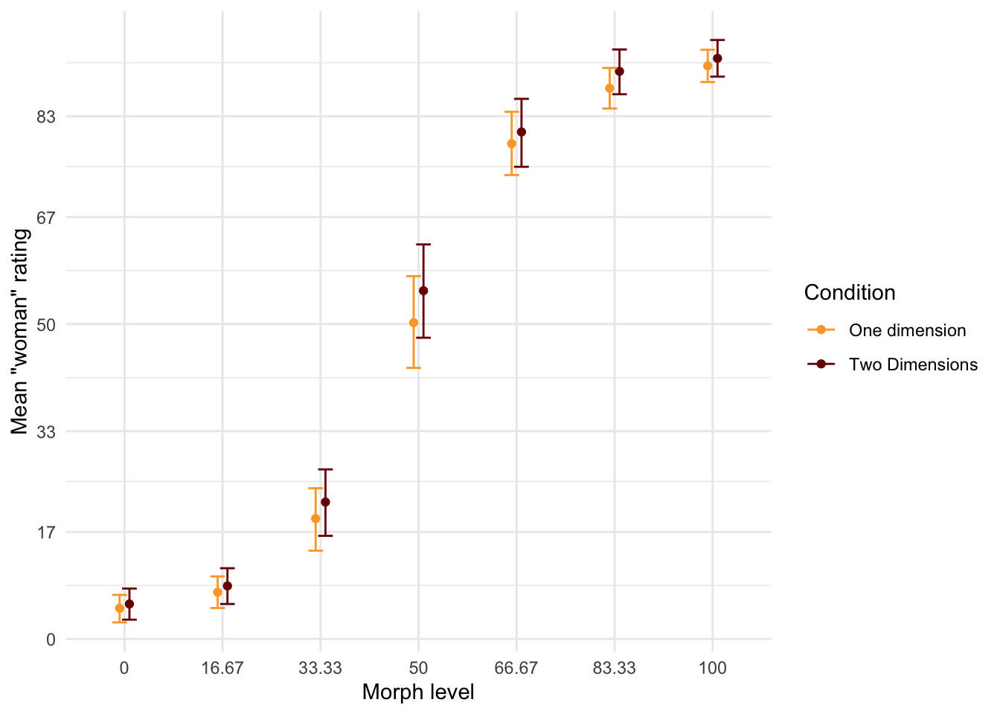
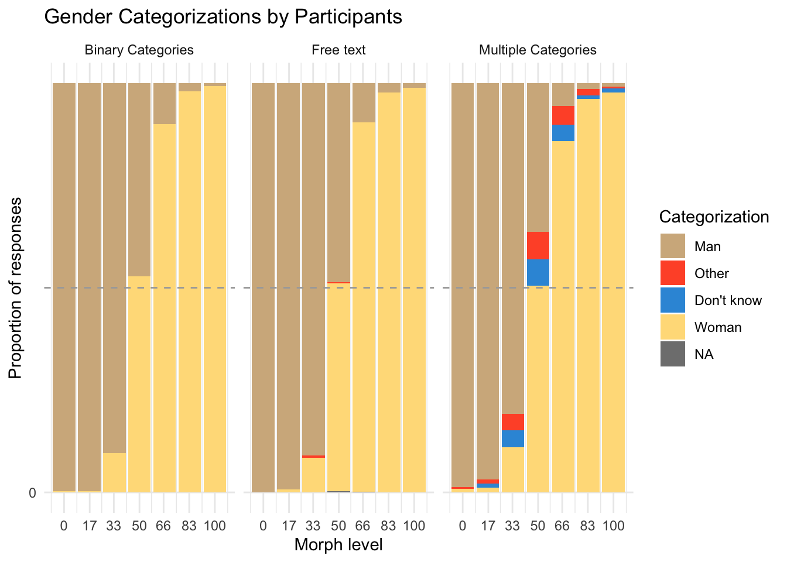

Awareness is growing that gender is not a strictly binary category, yet much of gender categorization research continues to treat gender as binary in terms of they design response options. This study comprises two experiments that challenge the binary gender norm in different ways by exploring alternative response options to measure gender categorization. In Experiment 1 (N=66), we compared one-dimensional and two-dimensional scales for gender categorization of a diverse set of morphed faces. We found that regardless of the response options used, participants treated gender categorically. In other words, participants accentuated their categorizations of womanhood and manhood, even when response options did not frame them as opposites. In Experiment 2 (N = 100) we compared traditional binary response options with multiple categories and free-text answers. The results suggested that while non-binary options such as “non-binary” and “I don’t know” led to categorizations beyond the binary framework in about half of the participants, free-text options did not elicit similar results. Despite the opportunity to categorize faces beyond the binary, the predominant categorizations remained as ‘woman’ or ‘man’.We conclude that while inclusive response options can facilitate acknowledgment of gender diversity, they do not fundamentally alter the binary perception of gender.
Research on gender categorization of others, however, is is still dominated by binary response options (eg (campanella_categorical_2001?; habibi_spontaneous_2012?; jung_automaticity_2019?)). Here we report two studies demonstrating how gender categorization of faces can be measured without reinforcing binary gender norms.
Two Challenges to the Gender Bianry
Psychology has a long tradition of treating gender as a simple binary. Accordingly gender was often constructed as a single dimension varying from feminine to masculine. Such a construction of gender implies that femininity is, by definition, the opposite of masculinity. An early challenge this norm came from Sandra Bem in the 70s (bem_measurement_1974?). She constructed a scale that measured femininity and masculinity separately - avoiding the implication that they are mutually exclusive. This construction allowed for alternative combinations of gender to the binary, such as androgynous which meant scoring high on both femininity and masculinity, and agender which meant scoring low on both.
Characteristically for research of its time, Bem’s work was still largely carried out within a binary gender framework, even as it implicitly challenged that framework. The BSRI treated gender as a psychological trait and the people possessing those traits were still seen as either women or men. Since then, as the extent of gender diversity has become more known (Matsuno and Budge 2017), it has become increasingly understood that any measurement which does not take this gender diversity into account is insufficient on its own.
A later group of challenges to the gender binary in psychology from the 2010s and onward to highlighted this gap. This work, often drawing from feminist research and writing, was more explicit about the need for psychology to make room for trans and non-binary gender identity (hyde_future_2018?; richards_non-binary_2016?; Morgenroth and Ryan 2018; Richards et al. 2016). (saperstein_categorical_2021?) suggested that surveys measuring gender include a range of response options, such as non-binary, other, transman, agender and more. Lindqvist et al. (2020) suggested an open text entry where participants can fill in their gender in an open-ended format. The free text response has the advantage of being completely unconstrained, allowing participants to enter any category, including categories which may not have occurred to the researchers. Moreover, the acceptable terms sometimes shift over time, as more marginalized voices are heard. The term “transsexual” for example, has been widely used and seen as acceptable, but is now understood to be stigmatizing (APA manual). A free text easily avoids this issue. It is increasingly common among researchers to adopt these open-ended approaches to measure participant gender (e.g. carleton_assessing_2022?; cronin_younger_2022?; dagostino_organizational_2022?; gottgens_impact_2022?).
Both the initial and later challenges to the gender binary in psychology primarily suggested ways to measures respondents’ own gender identity. This emphasis is understandable as gender identity is a commonly reported demographic variable. But gender is frequently is also frequently measured in terms of participants categorizations of others. The form such measurement takes is often quite similar to self-categorization, usually a forced-choice selection of two categories. Because self-categorization and categorization of others are different processes, however, the best measurement of self-categorization may not be the best measurement of the categorization of others.
Measuring gender categoriztaion of others
Research on how people perceive and categorize the gender of others has used both dimensional scales as well discrete categories, but in both cases almost exclusively treats gender as a binary category. It is fairly common, for example, to use the one-dimensional, masculine-feminine approach, where participants rate gender of others as a single dimension. Much of this research explores evolutionary and other reasons for gender in faces, correlating one-dimensional categorization of face gender with other traits, such as attractiveness (Little and Hancock 2002), and distinctiveness (O’Toole et al. 1998).
Another common approach tasks people to categorize faces according to a set of response options decided by the researchers, almost invariably “woman” and “man”. Studies using this method have shown that people rapidly and automatically categorize gender (habibi_spontaneous_2012?; jung_automaticity_2019?). This in turn indicates that gender is a salient category that determines how people evaluate others on a number of traits, such as agreeableness, dominance, etc (stolier_neural_2017?).
Moreover, participants categorize faces categorically (campanella_categorical_2001?). This phenomenon has been observed when participants categorize a number of faces that have been morphed to vary from feminine to masculine. Categorizations of these morphed faces were accentuated towards the dominant gender of the face, so that for example a 60% female morph was rated as a woman by closer to 80% of participants (campanella_categorical_2001?). Observing categorical effects for any stimuli suggest that people treat that stimuli as two separate categories, even if varies for gender. The observation of a categorical effect for gender suggests that people think of gender as a strict binary consisting of women and men only.
One consideration of this research is the response options used. The structure of response options communicates certain ideas about gender to participants. A one-dimensional scale implies that gender can vary on a continuum. It also places masculinity and femininity at the endpoints of the scales, so that a higher rating of femininity is by definition a lower rating of masculinity. This in turn suggests that someone cannot embody femininity and masculinity at the same time, indeed, that the two concepts are opposites. Binary response options consisting of woman/female and man/male only suggest that those are the only two categories that exist. On the other hand, two-dimensional scales and categories that include non-binary response options suggest the opposite, that femininity and masculinity are not mutually exclusive and that a multiplicity of genders exists. In other words, no matter which type of response options are used, ideas are being communicated to participants, potentially influencing their responses. Most recommendations suggest taking great care not to influence participants (Nichols and Maner 2008), but the effects of gender response options are rarely considered.
Another aspect of gender categorizations of others is that complete certainty is not possible. This is because many trans and non-binary individuals do not have a prototypical androgynous gender expression (richards_non-binary_2016?). Indeed many non-binary and even binary trans people may appear similar to their assigned gender at birth. Therefore, if a person aims to be inclusive, abstaining from categorizing until more information is available is always the safest option when encountering a face.
The purpose of Study 1 was to investigate this influencing effect of one and two-dimensional response options by investigating whether participants responses are categorical. A categorical effect are a useful outcome in this context because it suggests participants treat about the gender as consisting of only two categories: women and men. Drawing inspiration from Bem (1974) we compare gender categorization measured using one-dimensioanl response options and two-dimensional response options. If one-dimensional scales influence participants to think of gender as binary and opposites and two-dimensional scales don’t do this, there should be a reduced categorical effect for two-dimensional scales. We tested two research questions; would participants respond categorically to faces (Research Question 1) and would one-dimensional rating scale elicit stronger categorical responses than two-dimensional (Research Question 2).
The purpose of Study 2 investigated categorization using non-binary gender response options. We used both multiple categories beyond women and men, as suggested by among others Westbrook and Saperstein and we also used a free text as suggested by Lindqvist et al. Study 2 was mainly interested in how the two non-binary options compared to each other and how the presence of non-binary options affected the categorization of binary gender. As non-binary options have been promoted by feminist and LGBTQ+ activists, their inclusion might have more generalized effects on binary categorization. Therefore, study 2 also investigated categorization of women and men.
Study 1
Method
Participants
Code
# Get subjects informationsubs <- d %>%filter(condition =="md"| condition =="sd" ) %>%mutate(age =as.numeric(Age_1),gender =substr(Gender_1, 1,1) ) %>%count(id, age, gender)
Swedish participants (N = 66) completed the study in a lab at a Stockholm University campus (Mage= 37.36, SDage = 14.14, Range = 18 - 73). Self-identified gender was measured using an open-ended text box (31 women, 32 men and 2 participants who did indicate gender). Participants were monetarily compensated for their time (100 sek). All participants were informed that participation was voluntary and gave written consent to participate in the study. The administering researcher was blind to participant condition and participants were randomly allocated
Stimuli
The experiment included Black, Asian and White faces from the London Face Database (debruine_face_2017?) and the Chicago Face Database (ma_chicago_2015?) morphed with on Webmorph (debruine_webmorph_2018?). We matched faces of women and men using the codebook provided by the researchers, ensuring that the women were rated similar levels of feminine as the men were rated masculine. The morphs were made in 7 steps, from completely feminine to completely masculine. We defined the morph level as the degree of the the female face present in the morph. In other words, a 33% was slightly tilted toward the man, a 50% face was an even mixture and a 100% consisted only of the woman’s face. Because there were 18 pairs morphed in 7 steps, the total number of faces was 126.
Figure 1: Example of seven step morphing spectrum
Design and procedure
The experiment used a between-participants design. The two conditions were the one-dimensional (control condition), and two-dimensional (experimental) conditions. Participants were randomly allocated into one of the two response options conditions.
Participants completed the experiment on a computer in a quiet room. Each trial consisted of a face accompanied by the question “How would you gender categorize this person?”. In the one-dimensional control condition, participants rated gender based on a single continuum with the anchors marked “woman” and “man”. In the two-dimensional condition, participants rated each face twice on two different continua, ranging from “not woman” or “not man” to “woman” or “man”. Each person completed a total of 126 trials (i.e. they categorized every face in the stimuli set).
]
Data analysis
We used R (Version 4.2.2; R Core Team 2022) and the R-packages brms(Version 2.18.0; Bürkner 2017, 2018, 2021), papaja(Version 0.1.1; Aust and Barth 2022), and tidyverse(Version 1.3.2; Wickham et al. 2019). We fit the data to Bayesian mixed-effects models were to test the categorical effects. In all models, morph level and response options were included as fixed effects. Additionally, all models included varying intercepts for both participants and trials and varying slopes for facial femininity. The pattern of scores were clearly non-linear, meaning any linear model would probably be misspecified. Therefore, to reduce the complexity of the model, facial femininity was modeled as an ordered factor with seven levels, corresponding to each of the seven morphing steps. Any categorical effects should be strongest closest to the midpoint, therefore, we compared the two conditions at morph level = 33 and 67, reporting the credible intervals of the difference as well as the Savage-Dickey Bayes factors (Wagenmakers et al. 2010). At morph level 50 we would expect the ratings to be 50, regardless of condition.
Results
First, we examined whether participants responded categorially to faces (Research Question 1). Individual-level and group mean responses are visualized in Figure 3. If participants respond only to the morph of faces, the lines should be a straight diagonal. Instead, Figure 3 shows that most participants display a non-linear S-shape (see the light lines) and this was indeed also the pattern of the group means (see the dark lines).
Code
#Wrangle data againtmp <- d %>%filter(condition =="sd"| condition =="md") %>%mutate(f_rating =as.numeric(categorization) %>%ifelse(scale =="f", ., 100- .),scale_new =ifelse(scale =="f"| scale =="m", scale, "sd"),fem =as.factor(fem)) fit_dimensional_interaction <-brm(f_rating ~0+ fem:condition + (1+ fem|id) + (1+fem|face), family =gaussian(link ='identity'), prior =c(prior(normal(50,50), class ="b"),#prior(normal(50,50), class = "Intercept"),prior(exponential(1), class ="sd"),prior(lkj(1), class ="cor"),prior(exponential(1), class = sigma)),data = tmp,iter =4000, warmup =1000,cores =4,sample_prior =TRUE,file ="models/fit_dimensional_stair_factor.5")# carrying out the hypothesis testh_dim_33 <-hypothesis(fit_dimensional_interaction, "fem33.33:conditionmd= fem33.33:conditionsd" )h_dim_67 <-hypothesis(fit_dimensional_interaction, "fem66.67:conditionmd= fem66.67:conditionsd" )h_categ <-hypothesis(fit_dimensional_interaction, "fem66.67:conditionmd- fem33.33:conditionmd = fem66.67:conditionsd- fem33.33:conditionsd" )h_dim_67 <-hypothesis(fit_dimensional_interaction, "fem66.67:conditionmd= fem66.67:conditionsd" )
To further test this, we calculated the difference between the mean ratings at morph level 33 and 67. If participants respond linearly, this difference should be 34. Instead, in both conditions, this difference far exceeded 34 (M1D = 59.57, CI1D = [53.65, 65.26], M2D = 58.53, CI = [52.53-65.10]). This suggests participants responded categorically. However, Figure3 also suggests that there was a high degree of individual variation, and some participants were more categorical than others in their ratings.
Finally, we tested whether the categorical perception was reduced in the two-dimension condition compared to the one-dimension condition (Research Question 2). In fact, the two conditions were nearly the same (Difference = 0.83, CI = [-5.57, 7.24], BF0= 29.89).
I’m keeping the rest for historical purposes, but maybe the above paragraph’s is actually all that is needed?
Participant level and mean ratings of faces in Single dimension and multiple dimensions
Is there a difference in categorical responses by condition? (Research Question 2)
We tested whether this categorical effect was stronger in the one-dimension condition compared to the two-dimension condition. If two-domensional response options reduced categorical effect, ratings of femininity in the one-dimension condition should be higher at morph level 33 and lower at morph level 66 compared to the two-dimension condition.
Code
# Use brms to sample from posteriorc_eff <-conditional_effects(fit_dimensional_interaction) df <-as.data.frame(c_eff[["fem:condition"]])ggplot(df,aes(x = fem, y=estimate__, group=condition))+# geom_line(aes(color=condition), position = position_dodge(0.4)) +geom_point(aes(color=condition), position =position_dodge(0.2))+geom_errorbar(aes(ymin=lower__, ymax=upper__, color = condition), position =position_dodge(0.2), width =0.3) +scale_y_continuous(breaks =c(0, 17, 33, 50, 67, 83, 100)) +scale_color_viridis_d(name ="Condition",labels =c("One dimension", "Two Dimensions"),option ="H",direction =1,begin=0.7)+ylab("Mean \"woman\" rating" ) +xlab("Morph level")+theme_minimal()

Mean gender ratings in Single Dimension and Multiple Dimensions conditions
We compared the mean rating at morph levels 33.33 and 66.67 morph for both conditions. At morph level 33.33 the evidence strongly suggested that the mean “woman rating” in was the same in the one-dimension and two-dimension conditions (Mean difference = -2.63, CI =[-7.93, 2.76], BF01= 17.1). This was also the case at morph level 66.67 (Mean difference = -1.79, CI =[-6.31, 2.77], BF01= 23.54). In other words, for face perception we did not find that a one-dimension condition increased the categorical effect compared to the two-dimension condition.
Discussion
Participants responded categorically when rating faces in terms of gender. Additionally, two dimensional response options did not reduce this effect. Indeed a highly binary view of gender was present and participants treated womanhood and manhood as opposites even the scale would allow them to be more flexible. However, this scale only implicitly challenged the binary, as no diverse gender optipons were present.
Study 2
Study 2 tested a wider range of response options that explicitly challenge the gender binary. These were adapted from common ways to measure participants categorization of their own gender to other categorization research. Study 2 compared a control condition consisting of standard binary response options to two alternatives: a third gender option (such as ‘non-binary’ or ‘other’) and an open text box for participants to type in their response.
Method
Participants
Code
# Get subjects informationsubs <- d %>%filter(condition =="ft"| condition =="xb"| condition =="mc") %>%mutate(age =as.numeric(Age_1),gender =substr(Gender_1, 1,1) ) %>%count(id, age, gender)
Swedish participants (N = 100) completed the study in a lab at a Stockholm University campus (Mage= 37.16, SDage = 13.89, Range = 18 - 69). Self-identified gender was measured using an open-ended text box as recommended by (lindqvist_what_2020?) (56 women, 47 men 2 participants did not indicate gender). All participants were informed that participation was voluntary, that they could withdraw from the study and that results do no include any identifying features. All participants provided written informed consent. The administering researcher was blind to participant condition and participants were randomly allocated
Design, Stimuli and Procedure
The experiment used a between-participants design. There were three response options conditions, the binary categories, free text and multiple categories and conditions (see Figure 2). In the binary categories condition the response options consisted of two categories: “woman” and “man”. In the free text condition the response options consisted of an open text box. In the multiple categories condition, the response options consisted of four categories: “woman”, “man”, “other” and “I don’t know”. The stimuli were identical to those of Study 1. After being allocated to one of the three conditions, participants categorized 126 faces according to the response options in their condition.
Figure 2: Sample trial from each of the three conditions
The outcome was responses to the categorization task. For analysis purposes, these were aggregated in the following ways:
Beyond-binary categorizations represented the categories where participants did not categorize the face as woman or man. In the multiple categories conditions, it was computed by summing the “I don’t know” and “other”. In the free text condition, it was computed by summint variations of “other” and “non-binary”. The beyond-binary responses were coded as 1 and binary responses as 0. In the free text condition, this included various variations of “other” and “non-binary”. The beyond-binary responses were coded as 1 and binary responses as 0.
Binary categorization represented only the responses that were either woman (coded as 1) or man (coded as 0). All other responses were removed from this dataset (this meant removing a total of 116 responses from 12 participants).
Data analysis
We fit the data to Bayesian mixed-effects models were to test the categorical effects. In all models, morph level and response options were included as fixed effects. Additionally, all models included varying intercepts for both participants and trials and varying slopes for morph level.
Results
Even when participants had the option to categorize face beyond the binary, most still categorized faces as women and men. In the free text condition, only two (5.71%) of participants categorized a single face as other than woman and man. In the multiple categories condition, 10 (28.57%) of participants categorized any face beyond the binary; of those 5 (14.30%) categorized between 1 and 5 faces beyond the binaryt and 5 (14.30% categorized between 15-27 faces beyond the binary). The total number of faces was 124. Even among participants who categorized any faces beyond the binary, there was a great deal of variation in tendency to use these categories (see Figure 4)
Code
# make figure 1d %>%mutate(fem = fem ) %>%filter(condition =="ft"| condition =="xb"| condition =="mc") %>%#select correct conditionsfilter(id !=124) %>%#misunderstood the task, categorized by racegroup_by(fem, race, condition) %>%mutate(categorization =recode(categorization, #yes, this is pretty horrendous code, I haven't had a chance to sit down and clean it up yet."1"="Woman", "Woman"="Woman", "wman"="Woman", "woman"="Woman", "female"="Woman", "Female "="Woman", "Female"="Woman", "Fenale"="Woman", "women"="Woman", "woman "="Woman", "femLE"="Woman", "FEmale"="Woman", "Femalw"="Woman", "Fwmalw"="Woman", "Female "="Woman", "woman"="Woman", "Woman"="Woman", "feMale"="Woman", "fermale"="Woman", "wman"="Woman", "Femae"="Woman", "f"="Woman", "F"="Woman", "female "="Woman","2"="Man", "man"="Man","Male"="Man", "male"="Man", " Male"="Man", "M"="Man", "nmale"="Man", "male "="Man", "nale"="Man", "ale"="Man", "M"="Man", "m"="Man", "MALE"="Man","3"="Other", "Nonbinary"="Other", "Non Binary "="Other", "Non binary "="Other", "nonbinary"="Other", "4"="Don't know" ),condition =recode(condition, "ft"="Free text", "xb"="Binary Categories", "mc"="Multiple Categories"))%>%count(categorization) %>%filter(!is.na(categorization))%>%ggplot(aes(x=fem, y=n, fill=factor(categorization, levels =c("Man", "Other", "Don't know", "Woman")))) +geom_bar(stat="identity", position ="fill") +ggtitle("Gender Categorizations by Participants")+facet_wrap(~condition) +scale_x_continuous(breaks =c(0, 17, 33, 50, 66, 83, 100)) +scale_y_continuous(breaks =c(0, 17, 33, 50, 66, 83, 100)) +ylab("Proportion of responses" ) +xlab("Morph level") +#scale_fill_discrete(name = "Response") +#scale_fill_viridis_d(name = "Response")scale_fill_manual( values =c("#D2B48C", "#FF5733", "#3498DB", "#FFDD88"))+guides(fill =guide_legend(title ="Categorization"))+geom_hline(yintercept=0.50, linetype="dashed", color ="darkgrey")+theme_minimal()

Gender Categorizations by Participants
Code
#Fit models using brms.#Can be run with premade file to save time. To reproduce in full, comment out the "file" argumentNull <-brm(bbcat ~1+ (1|id) + (1|face:fem), family =bernoulli(link ='logit'), prior =c(prior(normal(0,3), class ="Intercept"), # weakly regularizing priorsprior(cauchy(0,3), class ="sd") ),data = tmp,iter =6000, warmup =2000,chains =4,cores =4,sample_prior =TRUE,file ="models/binary_null" )#Fitting the main effects modelMain_Effect <-brm(bbcat ~0+ condition + fem + (1|id) + (1|face:fem), family =bernoulli(link ='logit'), prior =c(prior(normal(0,3), class ="b", coef ="conditionmc"), #again, weakly regularizing priorsprior(normal(0,3), class ="b", coef ="conditionft"),prior(cauchy(0,3), class ="sd") ),data = tmp,iter =4000, warmup =1000,chains =4,cores =4,sample_prior =TRUE,file ="models/binary_mfx" )#fitting the interaction modelInteraction <-brm(bbcat ~0+ condition:fem + (1|id) + (1|face:fem), family =bernoulli(link ='logit'), prior =c(prior(normal(-3,3), class ="b"),prior(cauchy(0,3), class ="sd")),data = tmp,iter =6000, warmup =2000,chains =4,cores =4,sample_prior =TRUE,file ="models/binary_int.6" )
Code
Particiapnt <-brm(bbcat ~1+condition (1+ condition |id) + (1+condition|face:fem), family =bernoulli(link ='logit'), prior =c(prior(normal(-3,3), class ="Intercept"),prior(cauchy(0,3), class ="sd")),data = tmp,iter =6000, warmup =2000,chains =4,cores =4,sample_prior =TRUE,file ="models/p_effect" )Overall_model <-brm(bbcat ~1+ condition+ (1+ condition |id) + (1+condition|face:fem), family =bernoulli(link ='logit'), prior =c(prior(normal(-8,5), class ="Intercept"),prior(normal(0, 3), class ="b"),prior(cauchy(0,3), class ="sd")),data = tmp,iter =6000, warmup =2000,chains =4,cores =4,sample_prior =TRUE,file ="models/overall.3" )Particiapnte <-brm(bbcat ~1+ (1|id:condition) + (1|face:fem), family =bernoulli(link ='logit'), prior =c(prior(normal(-3,3), class ="Intercept"),prior(cauchy(0,3), class ="sd")),data = tmp,iter =6000, warmup =2000,chains =4,cores =4,sample_prior =TRUE,file ="models/p_effect2" )person_pars <-ranef(Interaction)
When people categorize faces beyond the binary such categorization also affects the categorization of faces as men or women. For example, does categorization of faces as non-binary systematically decrease “woman” categorization. We therefore investigated inclusive response options changed participants overall tendency to categorize women and men. Descriptive statistics for individual level responses are displayed in Figure 5.
We treated the binary categories condition as a neutral baseline and which the other two condoitions were tested against. The comparison of the multiple categories condition and the binary categories condition, indicated moderate evidence that gender categorization in the two conditions were the same (OR = 0.68, CI =[0.4, 1.17], BF01= 6.07). The comparison of the free text and binary categories conditions indicated strong evidence that the two conditions were the same (OR = 1.03, CI =[0.6, 1.78], BF01= 15.58). In other words, neither the free text or the multiple categories condition changed the pattern of categorization of women and men compared to the binary categories condition.
We also compared the relationship between facial femininity and woman categorizations (i.e. the slope of facial femininity) across the conditions. The effect of facial femininity on woman categorizations was almost exactly the same in the multiple categories and binary categories, as there was overwhelming evidence in favor of no difference (Difference = 0, CI =[-0.02, 0.03], BF01= 394.93). The effect of facial femininity on woman categorizations almost was exactly the same in the free text and binary categories, as there was overwhelming evidence in favor of no difference ((Difference > 0.001`, CI =[-0.02, 0.02], BF01= 394.93) )
Discussion
Experiment 1 indicated that participants categorize beyond the binary when response options include more options than women and men only. However, the free text option did not differ from the binary option. Thus, the written out choices seem to act as reminders to participants. Furthermore, categorization beyond the binary affected former man and women responses to similar degrees, meaning that the ratio of women and men categorizations was still about 50/50. This did not systematically affect their overall pattern of responses in terms of woman and man categorizations.
General discussion
In two experiment we tested how different response options influence gender categorization. In study 1 we compared two-dimensional scales with one-dimensional controls. We found that participants responded categorically and this was the case in both the control condition and the two-dimensional condition. In Study 2, we compared free text and multiple categories. We found that only multiple categories elicited beyond-binary responses. Compared to binary control, neither changed the pattern of categorizations of women and men.
The results comparing two-dimensional scales to the one-dimensional control differs from (bem_measurement_1974?). who found that participants categorize their own femininity and masculinity independently of each other. The results are, however, consistent with previous work suggesting faces are perceived categorically.
This categorical effect implies that the binary gender norm itself influences participants ratings. Furthermore, the two-dimensional ratings did not reduce the strength of the categorical effect. This suggests that at least in the present sample, two-dimensional response options were not enough to reduce the binary gender norms.
The finding that participants use non-binary response options is consistent with the work of (saperstein_categorical_2021?) and (lindqvist_what_2020?), which has shown that including flexible response options allow participants to better express themselves. A main recommendation from that literature is that open text boxes afford participants the greatest flexibility in their responses. In our study, however, that flexibility was almost never used when the response options consisted of a free text. This likely reflects the difference between TGD people categorizing their own gender and cisgender participants categorizing others.
A probable explanation for the difference between free text and multiple categories is that the multiple categories served as a visual reminder of non-binary identity. Researchers interested in categorization of non-binary identity should be aware that these may not spring to mind unless participants are explicitly reminded of them.
Neither free text or multiple categories impacted the categorizations of women and men. This suggests that such inclusive response options can be suitable for investigating categorization of women and men without skewing the results or introducing noise. This is a positive finding for researchers who are primarily interested in such categorizations but do not want to contribute to the marginalization of trans and non-binary individuals.
Overall, we recommend researchers to carefully consider how they measure categorization of others. Multiple dimensions, free text, and multiple categories and continua are all viable alternatives. If the primary research question is to investigate non-binary categorization, then multiple categories are most suitable. However, if the goal is to measure categorization of women and men, either free text or multiple categories may be equally suitable.
Conclusion
In two experiments we tested how different response alternatives affected gender categorizations. Participants were more likely to categorize faces beyond the binary when using a multiple categires including “non-binary” and “I don’t know” than when using a free text option. In comparison to self-identification questions where open ended responses are seen as the most inclusive alternative (lindqvist_what_2020?), categorization of others benefit from response options that explicitly reminds participants that not all people identify as women or men.
References
Aust, Frederik, and Marius Barth. 2022. papaja: Prepare Reproducible APA Journal Articles with R Markdown. https://github.com/crsh/papaja.
Bürkner, Paul-Christian. 2017. “brms: An R Package for Bayesian Multilevel Models Using Stan.”Journal of Statistical Software 80 (1): 1–28. https://doi.org/10.18637/jss.v080.i01.
———. 2021. “Bayesian Item Response Modeling in R with brms and Stan.”Journal of Statistical Software 100 (5): 1–54. https://doi.org/10.18637/jss.v100.i05.
Little, Anthony C., and Peter J. B. Hancock. 2002. “The Role of Masculinity and Distinctiveness in Judgments of Human Male Facial Attractiveness.”British Journal of Psychology 93 (4): 451–64. https://doi.org/10.1348/000712602761381349.
Matsuno, Emmie, and Stephanie L. Budge. 2017. “Non-Binary/Genderqueer Identities: A Critical Review of the Literature.”Current Sexual Health Reports 9 (3): 116–20. https://doi.org/10.1007/s11930-017-0111-8.
Morgenroth, Thekla, and Michelle K. Ryan. 2018. “Gender Trouble in Social Psychology: How Can Butler’s Work Inform Experimental Social Psychologists’ Conceptualization of Gender?”Frontiers in Psychology 9 (July). https://doi.org/10.3389/fpsyg.2018.01320.
Nichols, Austin Lee, and Jon K. Maner. 2008. “The Good-Subject Effect: Investigating Participant Demand Characteristics.”The Journal of General Psychology 135 (2): 151–66. https://doi.org/10.3200/GENP.135.2.151-166.
O’Toole, Alice J., Kenneth A. Deffenbacher, Dominique Valentin, Karen McKee, David Huff, and Hervé Abdi. 1998. “The Perception of Face Gender: The Role of Stimulus Structure in Recognition and Classification.”Memory & Cognition 26 (1): 146–60. https://doi.org/10.3758/BF03211378.
R Core Team. 2022. R: A Language and Environment for Statistical Computing. Vienna, Austria: R Foundation for Statistical Computing. https://www.R-project.org/.
Richards, Christina, Walter Pierre Bouman, Leighton Seal, Meg John Barker, Timo O. Nieder, and Guy T’Sjoen. 2016. “Non-Binary or Genderqueer Genders.”International Review of Psychiatry 28 (1): 95–102. https://doi.org/10.3109/09540261.2015.1106446.
Wagenmakers, Eric-Jan, Tom Lodewyckx, Himanshu Kuriyal, and Raoul Grasman. 2010. “Bayesian Hypothesis Testing for Psychologists: A Tutorial on the Savage Method.”Cognitive Psychology 60 (3): 158–89. https://doi.org/10.1016/j.cogpsych.2009.12.001.
Wickham, Hadley, Mara Averick, Jennifer Bryan, Winston Chang, Lucy D’Agostino McGowan, Romain François, Garrett Grolemund, et al. 2019. “Welcome to the tidyverse.”Journal of Open Source Software 4 (43): 1686. https://doi.org/10.21105/joss.01686.

 ]
]